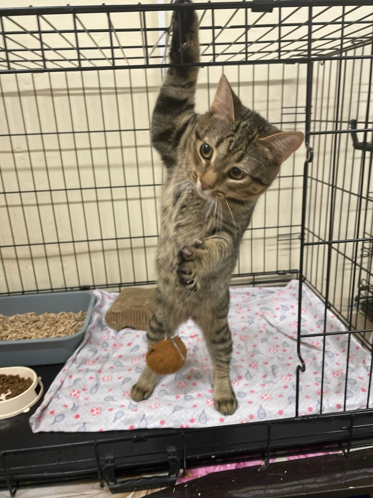
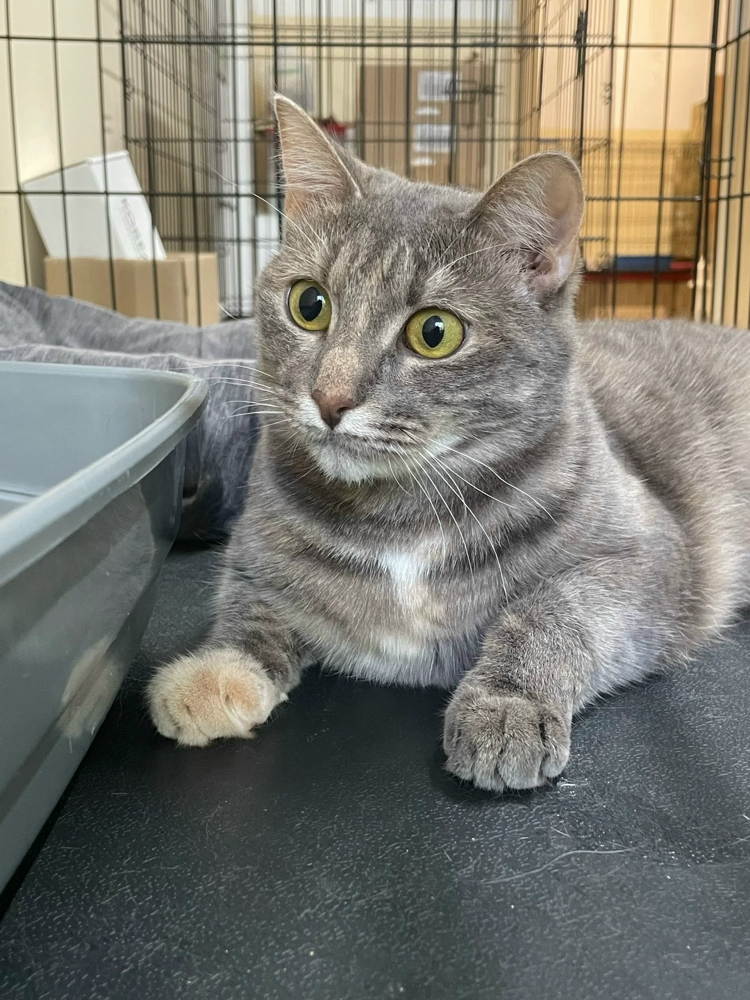
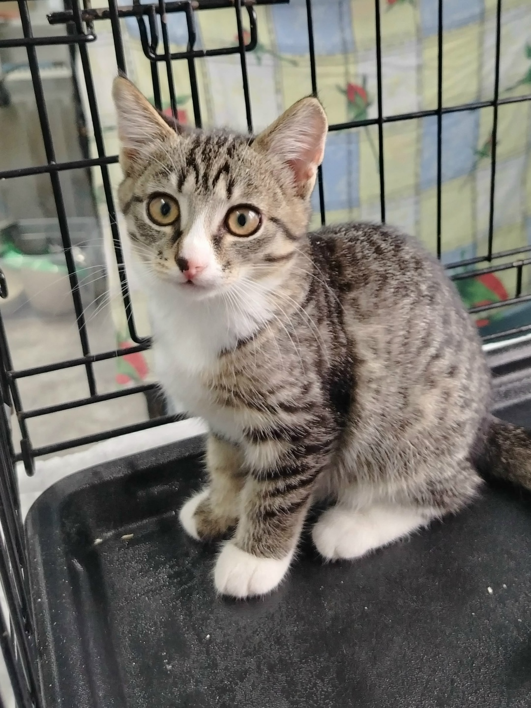
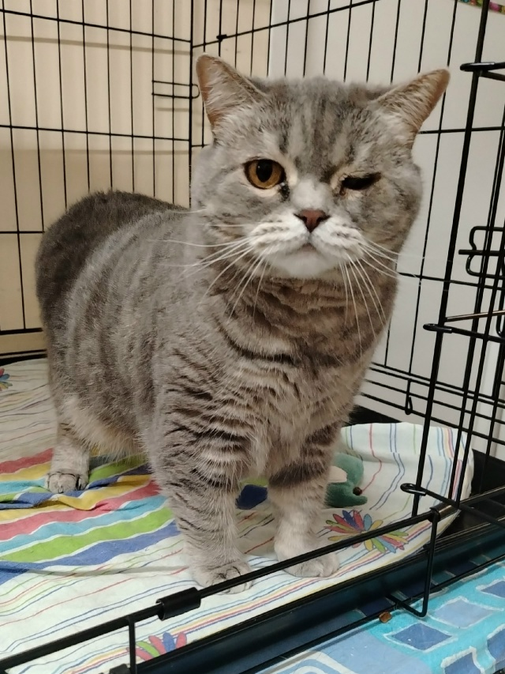
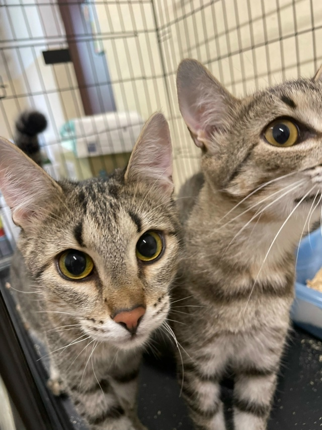
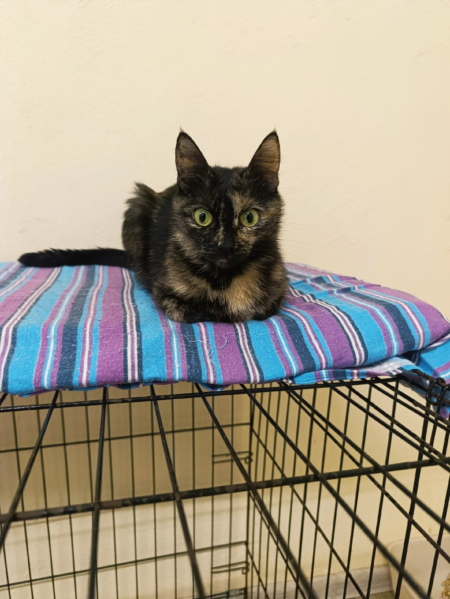
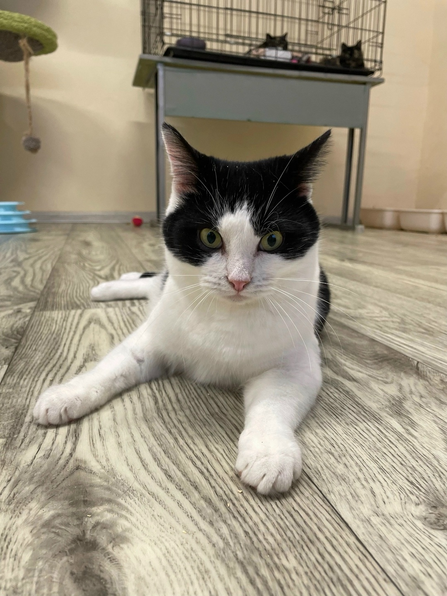
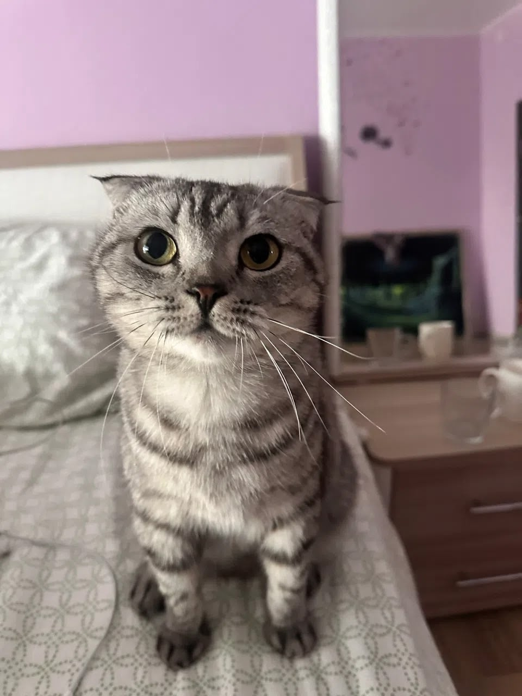
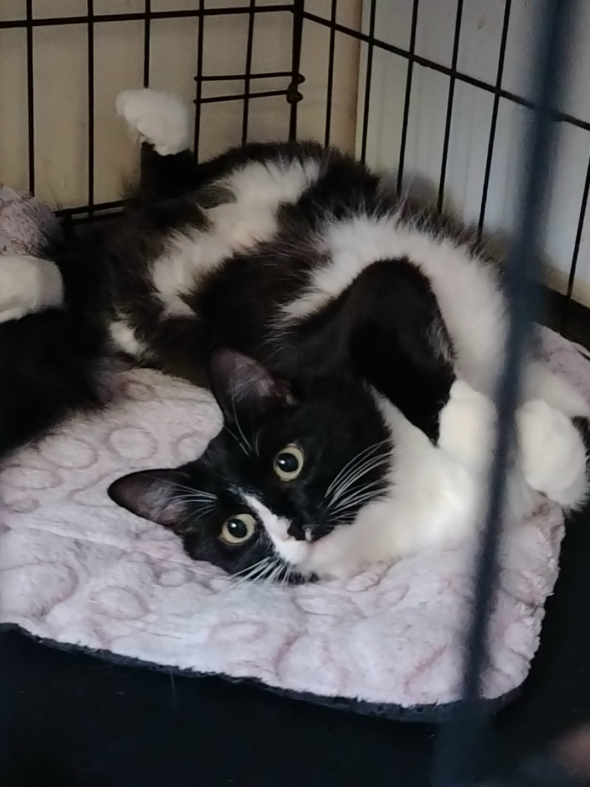
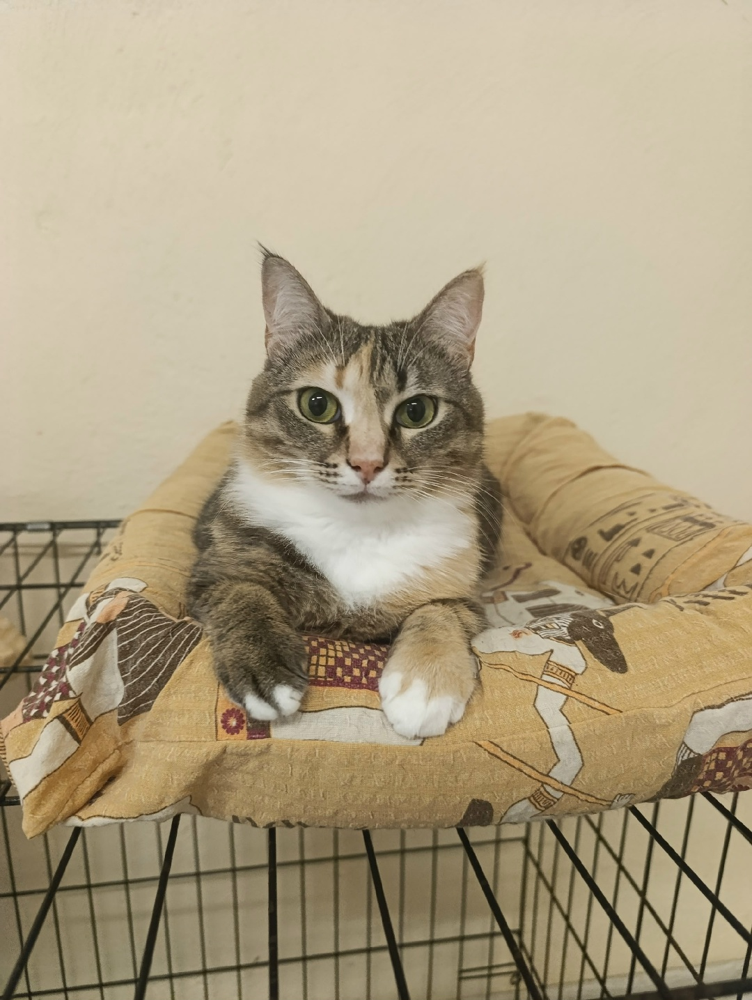

Каждая из них уже сделала свой первый шаг — от улицы к передержке. Следующий шаг — к вам.

Кувырок назад, кувырок вперёд, серьёзная моська — и снова покорять пространство! Весёлый и жизнерадостный котёнок, невероятно ласковый и ориентированный на человека.
Забрать домой
Настоящий «вечный двигатель»! Активная, шустрая, обожает игры и внимание. Полностью готова к переезду и ищет самую ответственную семью, которая больше никогда её не предаст.
Забрать домой
Малышка очень хочет стать домашней и любимой кошечкой. Ласковая, смышлёная и обаятельная, а ещё уже вполне самостоятельная — без промахов ходит строго в лоток.
Забрать домой
Невероятно нежная, безобидная и очень чистоплотная кошечка. Обожает внимание и тянет лапки к каждому, кто проходит мимо, выпрашивая ласку. Один глазик у неё с рождения чуть меньше другого — это совсем не мешает ей жить, а лишь придаёт мордашке трогательный, немного удивлённый вид.
Забрать домой
Братья-подростки, которые выросли у нас на руках — мы знаем о них всё. Активные, прыгучие и очень жизнерадостные ребята. Ищем для них самый лучший дом и любящих родителей, готовых взять сразу двоих.
Забрать домой
Активная, умная и очень ласковая красавица. Обожает внимание и с радостью дарит любовь заботливым хозяевам. К новым людям поначалу относится настороженно — нужно немного времени, чтобы довериться, а дальше она раскрывается как самый нежный и преданный друг.
Забрать домой
Парень с характером и тонкой душевной организацией — не из тех, кто настойчиво требует внимания. Если хочет побыть один — тихонько посидит в сторонке, а когда настроение подходящее, сам подойдёт за своей порцией ласки. Ему важнее спокойная, доверительная атмосфера и уважение к его границам.
Забрать домой
Настоящая душа компании: обожает внимание, с радостью сидит на коленях, мурлычет и дарит уют. К другим животным относится спокойно, без особой тяги к дружбе — комфортнее всего ей будет единственной любимицей в доме.
Забрать домой
От неё просто глаз не оторвать! Полна энергии, обожает игры и готова подарить всю свою преданность и любовь. Ищем для неё самых заботливых, ответственных и добрых людей, которые станут настоящей семьёй.
Забрать домой
Идеальный баланс ласки и самостоятельности. В меру активная: с удовольствием погоняет мячик, но не будет сводить с ума ночными марафонами. Очень нежная девочка, которая обожает мурчать на ручках. К новым людям поначалу осторожна — нужно немного времени, чтобы довериться, а дальше становится самым преданным другом.
Забрать домой